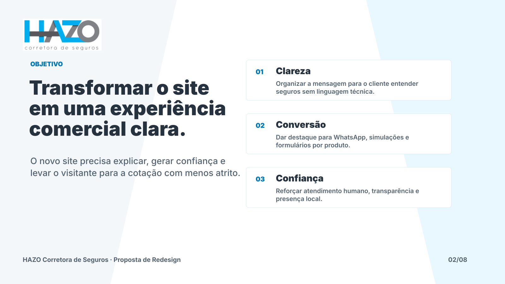
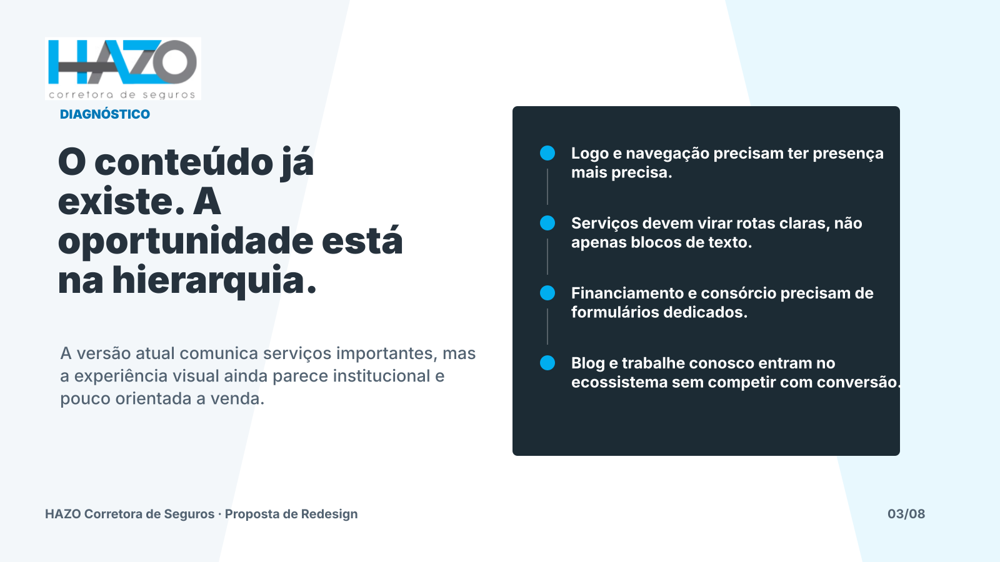
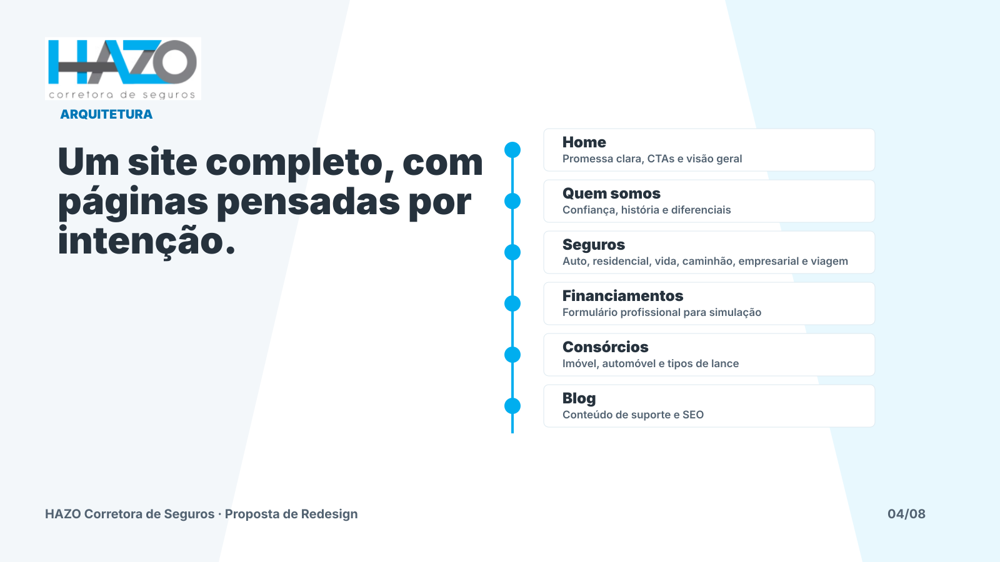
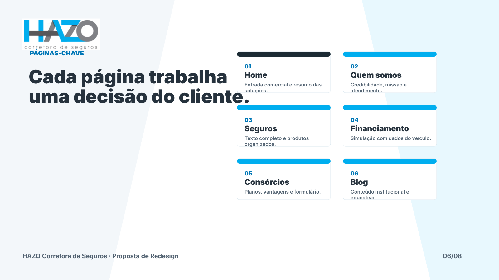
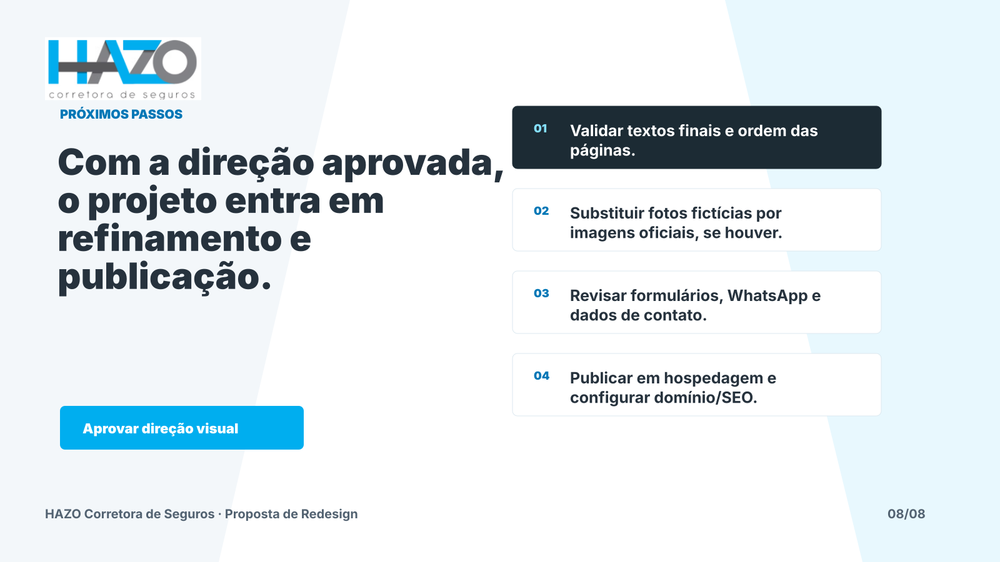

01 · Proposta de Redesign Digital
01 · Proposta de Redesign Digital

02 · Transformar o site em uma experiência comercial clara.

03 · O conteúdo já existe. A oportunidade está na hierarquia.

04 · Um site completo, com páginas pensadas por intenção.
 05 · A identidade Hazo ganha uma leitura mais premium e limpa.
05 · A identidade Hazo ganha uma leitura mais premium e limpa.

06 · Cada página trabalha uma decisão do cliente.
 07 · O WhatsApp vira o fluxo central de atendimento.
07 · O WhatsApp vira o fluxo central de atendimento.

08 · Com a direção aprovada, o projeto entra em refinamento e publicação.